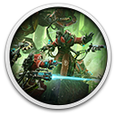
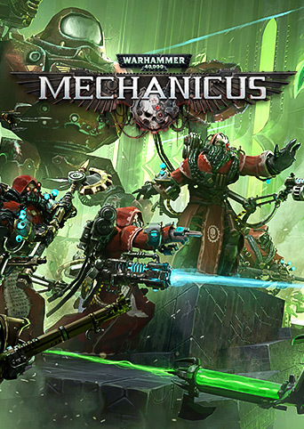

 Warhammer 40,000: Mechanicus - Standard Edition
Details
|  | |
| Playtime | Not Played |
| Last Activity | Never |
| Added | 12/30/2023 9:04:37 |
| Modified | 1/1/2024 0:15:17 |
| Completion Status | Not Played |
| Library | Epic |
| Source | Epic |
| Platform | PC (Windows) |
| Release Date | 11/15/2018 |
| Community Score | 84 |
| Critic Score | |
| User Score | |
| Genre | Sci-fi Strategy Turn-based |
| Developer | Bulwark Studios |
| Publisher | Kasedo Games |
| Feature | Achievements Cloud saves Controller support Overlay Single Player |
| Links | GOG Store Page GOG Forum |
| Tag | Atmospheric Board Game Difficult Dungeon Crawler Robots Science Story Rich Tactical Turn-Based |
Description

Take control of one of the most technologically advanced armies in the Imperium - The Adeptus Mechanicus. As Magos Dominus Faustinius, you’ll lead the expedition on the newly rediscovered Necron planet of Silva Tenebris. Customize your team, manage resources, discover long-forgotten tech, and control your Tech-Priests’ every move.
Your every decision will shape the missions ahead and ultimately decide the fate of the troops under your command in over 50 hand-crafted missions. Choose your path carefully - the Imperium depends on it.